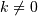
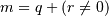

Indexing¶
ndarrays can be indexed using the standard Python x[obj] syntax, where x is the array and obj the selection. There are three kinds of indexing available: record access, basic slicing, advanced indexing. Which one occurs depends on obj.
Note
In Python, x[(exp1, exp2, ..., expN)] is equivalent to x[exp1, exp2, ..., expN]; the latter is just syntactic sugar for the former.
Basic Slicing¶
Basic slicing extends Python’s basic concept of slicing to N dimensions. Basic slicing occurs when obj is a slice object (constructed by start:stop:step notation inside of brackets), an integer, or a tuple of slice objects and integers. Ellipsis and newaxis objects can be interspersed with these as well. In order to remain backward compatible with a common usage in Numeric, basic slicing is also initiated if the selection object is any sequence (such as a list) containing slice objects, the Ellipsis object, or the newaxis object, but no integer arrays or other embedded sequences.
The simplest case of indexing with N integers returns an array
scalar representing the corresponding item. As in
Python, all indices are zero-based: for the i-th index ,
the valid range is where  is the
i-th element of the shape of the array. Negative indices are
interpreted as counting from the end of the array (i.e., if i < 0,
it means ).
is the
i-th element of the shape of the array. Negative indices are
interpreted as counting from the end of the array (i.e., if i < 0,
it means ).
All arrays generated by basic slicing are always views of the original array.
The standard rules of sequence slicing apply to basic slicing on a per-dimension basis (including using a step index). Some useful concepts to remember include:
The basic slice syntax is i:j:k where i is the starting index, j is the stopping index, and k is the step (). This selects the m elements (in the corresponding dimension) with index values i, i + k, ..., i + (m - 1) k where  and q and r are the quotient and remainder obtained by dividing j - i by k: j - i = q k + r, so that i + (m - 1) k < j.
Example
>>> x = np.array([0, 1, 2, 3, 4, 5, 6, 7, 8, 9]) >>> x[1:7:2] array([1, 3, 5])
Negative i and j are interpreted as n + i and n + j where n is the number of elements in the corresponding dimension. Negative k makes stepping go towards smaller indices.
Example
>>> x[-2:10] array([8, 9]) >>> x[-3:3:-1] array([7, 6, 5, 4])
Assume n is the number of elements in the dimension being sliced. Then, if i is not given it defaults to 0 for k > 0 and n for k < 0 . If j is not given it defaults to n for k > 0 and -1 for k < 0 . If k is not given it defaults to 1. Note that :: is the same as : and means select all indices along this axis.
Example
>>> x[5:] array([5, 6, 7, 8, 9])
If the number of objects in the selection tuple is less than N , then : is assumed for any subsequent dimensions.
Example
>>> x = np.array([[[1],[2],[3]], [[4],[5],[6]]]) >>> x.shape (2, 3, 1) >>> x[1:2] array([[[4], [5], [6]]])
Ellipsis expand to the number of : objects needed to make a selection tuple of the same length as x.ndim. Only the first ellipsis is expanded, any others are interpreted as :.
Example
>>> x[...,0] array([[1, 2, 3], [4, 5, 6]])
Each newaxis object in the selection tuple serves to expand the dimensions of the resulting selection by one unit-length dimension. The added dimension is the position of the newaxis object in the selection tuple.
Example
>>> x[:,np.newaxis,:,:].shape (2, 1, 3, 1)
An integer, i, returns the same values as i:i+1 except the dimensionality of the returned object is reduced by 1. In particular, a selection tuple with the p-th element an integer (and all other entries :) returns the corresponding sub-array with dimension N - 1. If N = 1 then the returned object is an array scalar. These objects are explained in Scalars.
If the selection tuple has all entries : except the p-th entry which is a slice object i:j:k, then the returned array has dimension N formed by concatenating the sub-arrays returned by integer indexing of elements i, i+k, ..., i + (m - 1) k < j,
Basic slicing with more than one non-: entry in the slicing tuple, acts like repeated application of slicing using a single non-: entry, where the non-: entries are successively taken (with all other non-: entries replaced by :). Thus, x[ind1,...,ind2,:] acts like x[ind1][...,ind2,:] under basic slicing.
Warning
The above is not true for advanced slicing.
You may use slicing to set values in the array, but (unlike lists) you can never grow the array. The size of the value to be set in x[obj] = value must be (broadcastable) to the same shape as x[obj].
Note
Remember that a slicing tuple can always be constructed as obj and used in the x[obj] notation. Slice objects can be used in the construction in place of the [start:stop:step] notation. For example, x[1:10:5,::-1] can also be implemented as obj = (slice(1,10,5), slice(None,None,-1)); x[obj] . This can be useful for constructing generic code that works on arrays of arbitrary dimension.
Advanced indexing¶
Advanced indexing is triggered when the selection object, obj, is a non-tuple sequence object, an ndarray (of data type integer or bool), or a tuple with at least one sequence object or ndarray (of data type integer or bool). There are two types of advanced indexing: integer and Boolean.
Advanced indexing always returns a copy of the data (contrast with basic slicing that returns a view).
Integer¶
Integer indexing allows selection of arbitrary items in the array based on their N-dimensional index. This kind of selection occurs when advanced indexing is triggered and the selection object is not an array of data type bool. For the discussion below, when the selection object is not a tuple, it will be referred to as if it had been promoted to a 1-tuple, which will be called the selection tuple. The rules of advanced integer-style indexing are:
If the length of the selection tuple is larger than N an error is raised.
All sequences and scalars in the selection tuple are converted to intp indexing arrays.
All selection tuple objects must be convertible to intp arrays, slice objects, or the Ellipsis object.
The first Ellipsis object will be expanded, and any other Ellipsis objects will be treated as full slice (:) objects. The expanded Ellipsis object is replaced with as many full slice (:) objects as needed to make the length of the selection tuple
 .
.If the selection tuple is smaller than N, then as many : objects as needed are added to the end of the selection tuple so that the modified selection tuple has length N.
All the integer indexing arrays must be broadcastable to the same shape.
The shape of the output (or the needed shape of the object to be used for setting) is the broadcasted shape.
After expanding any ellipses and filling out any missing : objects in the selection tuple, then let be the number of indexing arrays, and let be the number of slice objects. Note that (or we wouldn’t be doing advanced integer indexing).
If
 then the M-dimensional result is constructed by
varying the index tuple (i_1, ..., i_M) over the range
of the result shape and for each value of the index tuple
(ind_1, ..., ind_M):
then the M-dimensional result is constructed by
varying the index tuple (i_1, ..., i_M) over the range
of the result shape and for each value of the index tuple
(ind_1, ..., ind_M):result[i_1, ..., i_M] == x[ind_1[i_1, ..., i_M], ind_2[i_1, ..., i_M], ..., ind_N[i_1, ..., i_M]]Example
Suppose the shape of the broadcasted indexing arrays is 3-dimensional and N is 2. Then the result is found by letting i, j, k run over the shape found by broadcasting ind_1 and ind_2, and each i, j, k yields:
result[i,j,k] = x[ind_1[i,j,k], ind_2[i,j,k]]
If , then partial indexing is done. This can be somewhat mind-boggling to understand, but if you think in terms of the shapes of the arrays involved, it can be easier to grasp what happens. In simple cases (i.e. one indexing array and N - 1 slice objects) it does exactly what you would expect (concatenation of repeated application of basic slicing). The rule for partial indexing is that the shape of the result (or the interpreted shape of the object to be used in setting) is the shape of x with the indexed subspace replaced with the broadcasted indexing subspace. If the index subspaces are right next to each other, then the broadcasted indexing space directly replaces all of the indexed subspaces in x. If the indexing subspaces are separated (by slice objects), then the broadcasted indexing space is first, followed by the sliced subspace of x.
Example
Suppose x.shape is (10,20,30) and ind is a (2,3,4)-shaped indexing intp array, then result = x[...,ind,:] has shape (10,2,3,4,30) because the (20,)-shaped subspace has been replaced with a (2,3,4)-shaped broadcasted indexing subspace. If we let i, j, k loop over the (2,3,4)-shaped subspace then result[...,i,j,k,:] = x[...,ind[i,j,k],:]. This example produces the same result as x.take(ind, axis=-2).
Example
Now let x.shape be (10,20,30,40,50) and suppose ind_1 and ind_2 are broadcastable to the shape (2,3,4). Then x[:,ind_1,ind_2] has shape (10,2,3,4,40,50) because the (20,30)-shaped subspace from X has been replaced with the (2,3,4) subspace from the indices. However, x[:,ind_1,:,ind_2] has shape (2,3,4,10,30,50) because there is no unambiguous place to drop in the indexing subspace, thus it is tacked-on to the beginning. It is always possible to use .transpose() to move the subspace anywhere desired. (Note that this example cannot be replicated using take.)
Boolean¶
This advanced indexing occurs when obj is an array object of Boolean type (such as may be returned from comparison operators). It is always equivalent to (but faster than) x[obj.nonzero()] where, as described above, obj.nonzero() returns a tuple (of length obj.ndim) of integer index arrays showing the True elements of obj.
The special case when obj.ndim == x.ndim is worth mentioning. In this case x[obj] returns a 1-dimensional array filled with the elements of x corresponding to the True values of obj. The search order will be C-style (last index varies the fastest). If obj has True values at entries that are outside of the bounds of x, then an index error will be raised.
You can also use Boolean arrays as element of the selection tuple. In such instances, they will always be interpreted as nonzero(obj) and the equivalent integer indexing will be done.
Warning
The definition of advanced indexing means that x[(1,2,3),] is fundamentally different than x[(1,2,3)]. The latter is equivalent to x[1,2,3] which will trigger basic selection while the former will trigger advanced indexing. Be sure to understand why this is occurs.
Also recognize that x[[1,2,3]] will trigger advanced indexing, whereas x[[1,2,slice(None)]] will trigger basic slicing.
Record Access¶
See also
If the ndarray object is a record array, i.e. its data type is a record data type, the fields of the array can be accessed by indexing the array with strings, dictionary-like.
Indexing x['field-name'] returns a new view to the array, which is of the same shape as x (except when the field is a sub-array) but of data type x.dtype['field-name'] and contains only the part of the data in the specified field. Also record array scalars can be “indexed” this way.
Indexing into a record array can also be done with a list of field names, e.g. x[['field-name1','field-name2']]. Currently this returns a new array containing a copy of the values in the fields specified in the list. As of NumPy 1.7, returning a copy is being deprecated in favor of returning a view. A copy will continue to be returned for now, but a FutureWarning will be issued when writing to the copy. If you depend on the current behavior, then we suggest copying the returned array explicitly, i.e. use x[[‘field-name1’,’field-name2’]].copy(). This will work with both past and future versions of NumPy.
If the accessed field is a sub-array, the dimensions of the sub-array are appended to the shape of the result.
Example
>>> x = np.zeros((2,2), dtype=[('a', np.int32), ('b', np.float64, (3,3))])
>>> x['a'].shape
(2, 2)
>>> x['a'].dtype
dtype('int32')
>>> x['b'].shape
(2, 2, 3, 3)
>>> x['b'].dtype
dtype('float64')
Flat Iterator indexing¶
x.flat returns an iterator that will iterate over the entire array (in C-contiguous style with the last index varying the fastest). This iterator object can also be indexed using basic slicing or advanced indexing as long as the selection object is not a tuple. This should be clear from the fact that x.flat is a 1-dimensional view. It can be used for integer indexing with 1-dimensional C-style-flat indices. The shape of any returned array is therefore the shape of the integer indexing object.